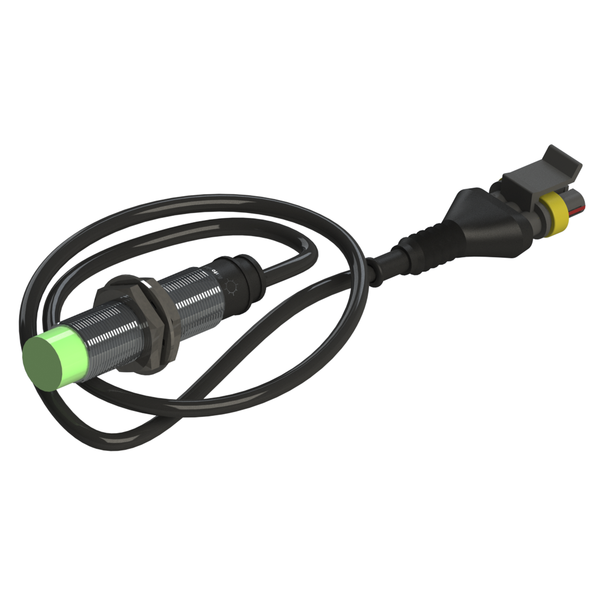
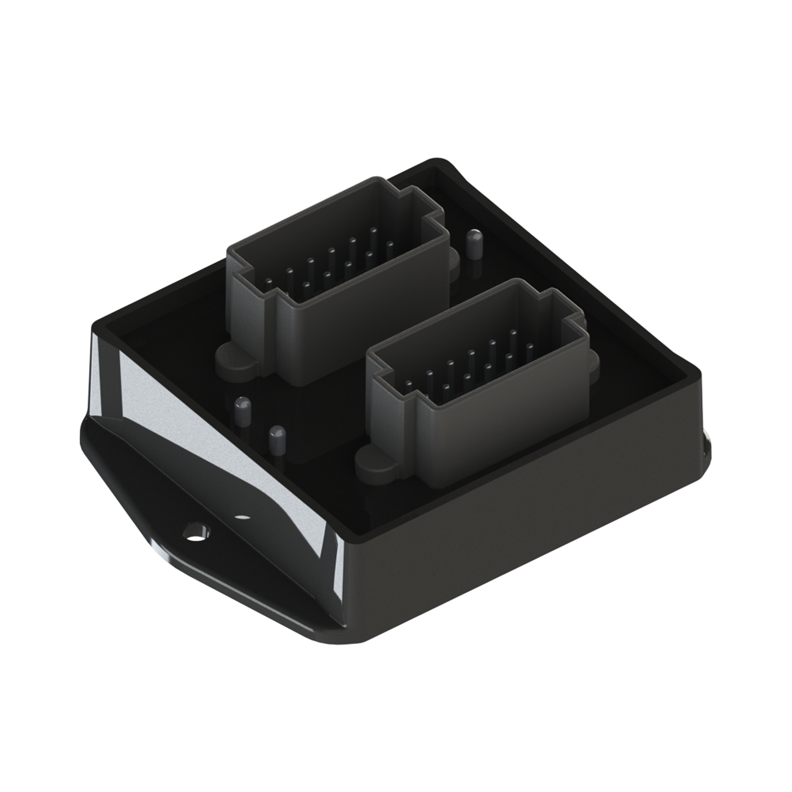

What is supplied
The minimum system, the optional devices a machine can carry, and the cables that connect them.
The minimum system is the Hectare One panel and the seed sensors — one sensor per section. Agriwelt seed sensors have their own controller and are connected to the panel directly.

Each section of the implement gets its own seed sensor.

Optional devices
Everything else is optional. What a machine carries is written into the panel's profile.
| Device | How many | What it is for |
|---|---|---|
| Pressure sensor | Up to three | Positive pressure or vacuum. |
| HUB8 input device | As needed | Sensors of the “open collector” kind — speed, hopper, fan, dispenser, work position, markers, Wilger flow meters. |
| Dispenser electric motors | With their controller | Applying seed or dry fertilizer to the rate. |
| Tramline actuators | Up to four | Shutting sections off for the tramline. |
| Electric pump controller | One | Liquid fertilizer — UAN, micro-fertilizers and the like. |
The inductive sensor below serves two jobs: it measures the travel speed, and it watches that a dispenser shaft is turning.

The HUB8 takes sensors that have no controller of their own and reports each of them to the panel as if it were a device.

One controller design drives the dispenser motors and the liquid fertilizer pump. That is why a machine cannot have a pump without also having the controller a motor would use.

Cables
The panel takes its power through its own supply cable.

A HUB8 is joined to the system by a 4-pin Amphenol network cable.

The sensors plug into the HUB8 through a harness.

Something your machine does that this page does not answer? Write to support@agriwelt.com — an engineer answers.